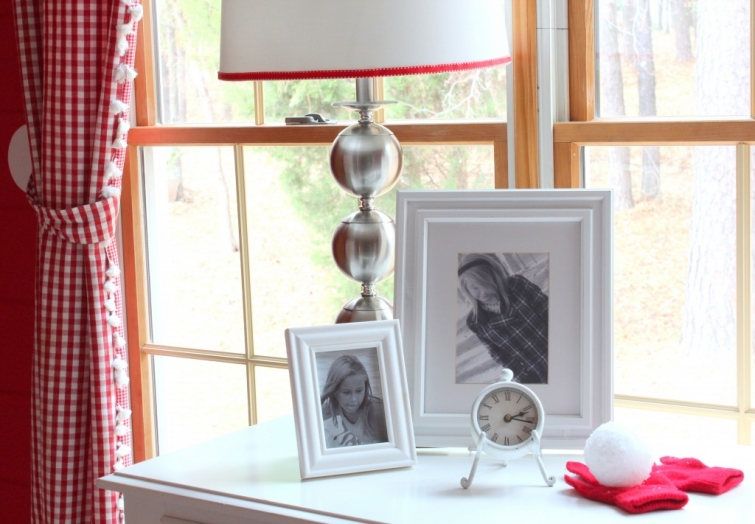

.png)
.PNG)
.PNG)
.PNG)
.PNG)
.PNG)
.JPG)
.JPG)
.PNG)
.PNG)


Merry Christmas! Is it too early to say that? I sure hope not because I love Christmas and everything about it. What other time of year do you find so many people making their homes beautiful, going to parties, cooking special desserts, and listening to wonderful music? And on top of that, my favorite color is red. So you see, I simply cannot resist all there is of Christmas. Christmas decorating around here is very traditional as you will see in the coming weeks – lots of red. So I decided to title this season’s posts as Christmas Traditions.
Today’s tradition is snow – but not like what you think. Yes, I would love to just once see a white Christmas, but so far it’s been a no show. And no, it has not snowed here recently as the photo at the top might lead you to believe. (I just couldn’t resist putting that old picture in here with this title.) My tradition of snow is in the Christmas decorations in our daughter’s bedroom…like the red mittens with the “snowball” I made from styrofoam and artificial snow.

And every year I hang a garland over her window with red bows, red mitten “ornaments” bought years ago from a Hallmark shop, and lights.


She loves to leave the twinkling lights on at night even while she is sleeping.

There are snowflakes on accessories at her desk …

and more snowballs in the jar there, too.
Her bunkbeds get a snow pillow…
and a snowflake pillow (also from Hallmark years ago.)

And by her bed is hot cocoa in a snowflake mug. Unlike me, she does not like whipped cream on her drink. (Poor child..she is missing the best part!)
And for you, I am leaving a recipe so that you can enjoy some hot cocoa too!
with Christmas cheer,


.PNG)
That hot chocolate recipe sounds delicious. I just may have to whip up a batch. I love the gingham and pom pom trim combo! Your daughter must love her room-it’s so festive!
———————————————————————
Peggy, so glad you liked the cocoa recipe! It is delicious and you should try it soon. 🙂 I am addicted to gingham!
Kelly
Love the red room- it’s so fresh all year long!! Got to try this cocoa recipe!!
Maybe it will cool down here in upstate South Carolina. 2 years ago we had a white Christmas Day. Last year we had a summer Christmas in New Zealand-all about the beach and the barbie.
———————————————————————-
Pat P. – So glad you liked the room. Both of my sons want to one day go to New Zealand. I was just reading tonight about someone in New Zealand closing their etsy shop after Christmas for “summer break.” That seems so strange to me! We are having record highs for December here in Georgia this week, so I know what you mean about it needing to cool down in South Carolina…just doesn’t seem like Christmas when you can wear shorts!
Kelly
I,too, love Christmas because I get to use my favorite color everywhere. Your pictures are beautiful. I know your daughter has to love Christmas with the special touches you put in her bedroom.
———————————————————————-
Pat – Wouldn’t it be great if we could just leave up the Christmas decorations through February or so? (Of course, my dead tree would have to go long before that though! :)) My daughter liked her room for awhile, but since it has been like this for quite a long time, she is ready for me to change it. Thank you for taking the time to read and leave a comment on the blog.
Kelly
Such a beautiful post! It made me remember that when my daughter was growing up my favorite bedding she had was a Ralph Lauren floral comforter with lots of red…a Ralph Lauren red plaid blanket and lots of red transfer ware plates and platters on the walls that she never liked! However…she did love the flannel red and white snow flake sheets I always put on her bed at Christmas! I may just have to get these back out when she and her husband come home for Christmas this year! Thanks for the reminder of such wonderful traditions! Thanks for stopping by the other day! I love your blog!
———————————————————————–
Carolyn – I think I would have loved all your Ralph Lauren linens! They sound beautiful, and I think the red flannel snowflake sheets would work in my daughter’s room now.:) Thank you for reading and commenting here. I love your blog too!
Kelly
I hope you had a great Thanksgiving and MERRY CHRISTMAS! I’m with you…there is nothing like Christmas time and I am so enjoying decorating.
———————————————————————–
Lindsay – Your Christmas decorating is coming along much faster than mine! I am jealous…I haven’t even touched my mantel, and you have yours up, a blog post done, and you have linked to other blog parties! Please send me some elves. 🙂
First of all, I like how you change your banner pics with the change of the seasons. So pretty.
Your daughter’s room is fabulous! Christmas cheer perfection. 🙂
———————————————————————
Lori – Thank you for noticing the banner!! I do try to change it out as much as I can. And thank you for your sweet comments on our daughter’s room. It lends itself to decorating for Christmas so well. Red rooms just make it very easy.
Kelly
What a darling room! You have such good ideas. I know your daughter must love it. I’d have the Christmas spirit all year and maybe I could get my shopping done early and avoid the crowds. Can’t wait to try the hot chocolate. It sounds delicious.
——————————————————————-
Minnie – I hope you do get to make the hot cocoa. It is really delicious. And thank you for the kind words on our daughter’s room, too!
Kelly
Merry Christmas, Kelly! I love your daughter’s room, mittens and snowflakes say it all don’t they?! Thanks for sharing yet another delicious sounding recipe with us. Is this syrup similar to Hershey Chocolate Syrup? I am asking as a chocoholic who loves chocolate on ice cream as much as I like cocoa and I’m thinking of ways to use it up within 10 days…so I can make it again, Ha! Have a great time decorating!
————————————————————————-
Rose – Merry Christmas to you too! The syrup is very similar to the Hershey’s syrup, but has a little more complex flavor, and I imagine if you use a chocolate that is high in the cocoa percentage it would taste even better. (I used Hershey’s for all the chocolate ingredients in ours.) You could definitely use this on ice cream (or eat it straight out of the bowl with a spoon!) Hope you get to make it and enjoy it.
Kelly
LOVE the color combination with the light blue, and how you can switch the whole feel of the room with a change of accessories – and I leave the twinkling lights on at night too. 🙂
————————————————————————-
Deena – Thank you for the compliments on the room. That light blue denim is very versatile, and we have used it for many many years! I’ll tell my daughter that she is not alone in her love of leaving the Christmas lights on at night. She will appreciate it! Thank you for visiting the blog.
Kelly
Kelly,
What a darling room. I love read and the white dots make it very fun. She must love coming home to that room, so inviting and cozy. Your recipe for cocoa syrup sounds delicious, will it keep in the fridge for a few weeks? If so I will be making it for our Christmas celebration when our oldest son, daughter in law and granddaughter come to celebrate with us.
Merry Christmas, it’s not too early!
Karen
———————————————————————
Karen – Merry Christmas to you! I’m so glad you liked my daughter’s room. It is a fun room. The cocoa syrup is supposed to last for 10 days or so…although I think ours would be all used up in that time considering everyone here is a chocoholic.
Kelly
Hi Kelly,
Oh yes… such a wonderful feeling inside when it is snowy for Christmas! Of course, this year, we’ve have snow for the last 6 weeks! Here in Calgary we can also get Chinook winds blowing in from the mountains which can get rid of that snow within hours (there is a reason that some people say that Chinook means “snow eater” in one of the native dialects – not sure how accurate that is).
Love how you decorated your daughter’s room… she must love it!
Here’s hoping for fresh snow for Christmas – if not for you at least for us… 🙂
Take care
Cath
———————————————————————–
Cath – You are making me so jealous with visions of all the snow.(Although the winds don’t sound like much fun…and would chill me to the bone!) My daughter is ready for a change in her room. It has been that way for quite awhile, and I just might have to do that next summer when she is home on college break. I’ll be hoping for Christmas snow too.
Kelly
Oh I so love your daughter’s room….just love the garland of mittens and the theme of snowflakes and snowballs!!…Been decorating all day and will be at least for the next two weeks…Happy decorating…look forward to your wonderful creations!!
—————————————————————————
Shirley – You always say the nicest things! I just loved those mitten ornaments and pillows when I saw them at Hallmark and decided that I HAD to use them in our daughter’s room. I know what you mean about decorating for the next 2 weeks. Same here – although I always shoot for getting it done faster. Good luck with all of your decorating.
Oh- Everything looks absolutely gorgeous. I love how festive and bright everything looks-what a special room for a special girl! Mittens, snowflakes and all~ xo Diana
———————————————————————–
Diana – Thank you so much for the kind compliments on our daughter’s room! The red walls just call for Christmas. I wish the snow was REAL snow. You are a sweetie to read and leave your comments here.
Kelly